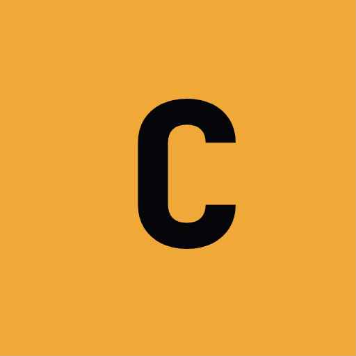

SEQUENCE
—
SEQUENCES
Select Sequence
Sequences
Timecode
Cue
Description

01:00:15:00, CUE NAME, optional descriptionA Playlist is a named set of sequences — think of it as one night's show or one performance. You can have multiple playlists (e.g. "Night 1", "Night 2", "Rehearsal"). Only the active playlist is used in live mode; sequences from other playlists are completely invisible to TC tracking. Switch playlists using the Playlists panel in the sidebar.
A Sequence (or song) is a timed block within a playlist — typically one song, act, or scene. Each sequence has its own start TC, duration, and a list of cues. In the sidebar's Sequences panel you can reorder them by dragging the ⠿ handle, select multiple to move or delete them, and add new sequences.
Tracks are the departments or data streams in your show — for example "Lighting", "Audio", "Video". Each cue belongs to one track. In the Tracks panel you can create, rename, and toggle which tracks are visible. Editor roles can be restricted to specific tracks they are allowed to edit.
Roles control what each collaborator can see and do:
Invite collaborators via the Sharing button (globe icon) in the sidebar.
In Edit Mode you can add, edit, and rearrange cues. Select a sequence from the sidebar, then click any cue row to edit its timecode, label, notes, or media. Use the + button to add new cues manually, or drag in the timeline to create them visually.
The Timeline (bottom panel) shows all cues for the active sequence plotted on a time axis. Click the timeline to jump TC to that position. Drag cue markers to shift their timecode. Right-click a cue marker to open quick edit options. Use the zoom controls at the top-right to zoom in and out. To add a new cue directly on the timeline, click an empty area while holding Alt.
Each cue can have a note (rich text) and attached media (image or video file). Click the note icon on a cue row to open the rich-text notes editor. Click the media icon to attach a file — it will display in the cue detail panel when that cue is active in live mode, useful for reference images or score PDFs.
Press Space or the ▶ button to enter Live Mode. The screen switches to a large cue waterfall showing the current, next, and upcoming cues based on the incoming timecode. Only sequences in the active playlist are shown. The header bar shows the current sequence name and TC position. Pressing Space again (or the ■ button) exits live mode.
MIDI Timecode (MTC) is the standard way to sync CueFlow to a show's master clock (DAW, playback system, lighting console). To connect:
If your MTC lands slightly off, use the TC Offset setting to apply a global frame offset correction.